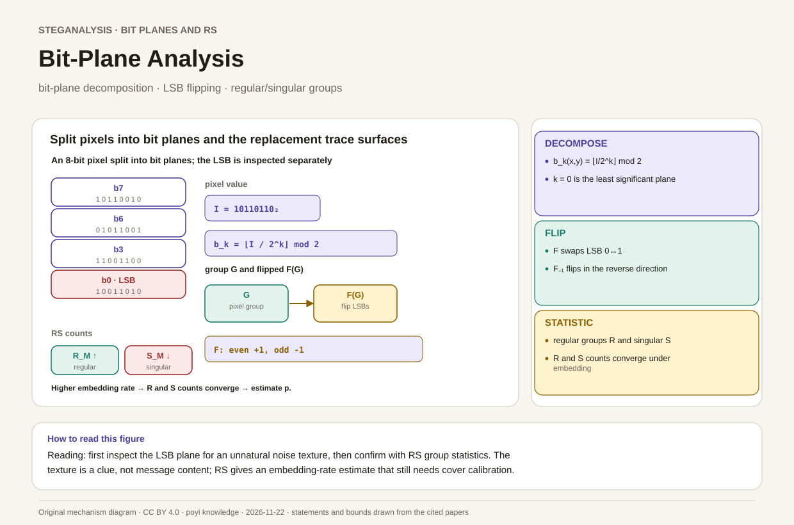
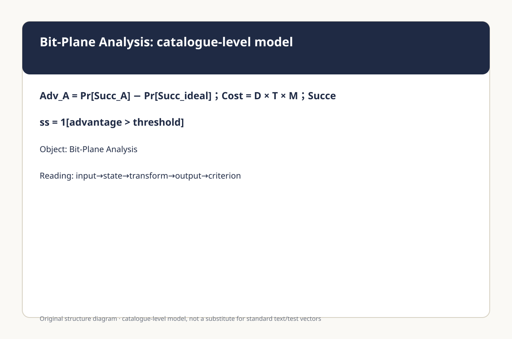

Principles
Attack: Bit-Plane Analysis (位平面分析). ### Bit-plane decomposition
Write an 8-bit grey image as a pixel matrix I(x,y). The k-th bit plane is
b_k(x,y) = ⌊I(x,y) / 2^k⌋ mod 2. k=0 is the least significant bit plane (LSB); k=7 is the most significant. High planes retain contours while low planes look closer to noise. LSB replacement changes only k=0, so it leaves large-scale brightness almost intact but alters the local correlation of the LSB plane. ### The LSB flipping function
For a pixel value x, let F(x) flip the least significant bit: even x becomes x+1 and odd x becomes x-1; F₋₁ maps even x to x-1 and odd x to x+1. RS analysis partitions pixels into groups G under a mask M and evaluates a discrimination function f on F(G) and G. A group is regular (R) if f(F(G)) > f(G) and singular (S) if it is smaller. Natural images have a stable bias between R and S counts. ### Reading the embedding rate
LSB replacement pushes the group LSBs toward independent random bits, so R and S counts converge. Counting R_M, S_M, R_{-M} and S_{-M} for masks M and -M gives four curves from which an embedding rate p can be estimated; p near 0 means little replacement and p near 1 means the LSB plane has been heavily overwritten. The exact estimator depends on group size, discrimination function and image content, so one threshold is not a universal answer.

Why it matters
LSB bits in natural images are not perfectly random: sensor noise, quantisation, demosaicing and compression leave correlations among neighbouring low bits. LSB replacement overwrites this layer with message bits, replacing local structure with nearly independent bits; both the bit-plane texture and the RS counts change.
Chi-square analysis looks at histograms of adjacent value bins; bit-plane and RS analysis look at spatial groups and a discrimination function after flipping. The former is sensitive to the global histogram, the latter to local texture and group structure. They complement each other but both mainly target naive LSB replacement.
To resist bit-plane and RS detection, an embedder should not simply replace bits one by one. It should use matrix embedding, wet-paper coding, F5, adaptive embedding or spread spectrum so that the locations and directions of changes resemble the cover distribution. Encrypting the message before writing it into the LSB is not the same as making it undetectable.
Applications
- Record the image format, bit depth, colour space, compression history and possible resampling. 2. Extract bit planes k=0…7 and inspect them visually; an unnatural uniform noise or block structure in the LSB plane makes the image a candidate. 3. Choose a group size and mask M, then compute R_M, S_M, R_{-M} and S_{-M}. 4. Calibrate against known covers and known embedding rates to estimate an interval for p; do not decide from one threshold on one image. 5. Report “a statistical trace of LSB replacement with an estimated embedding rate”, not “the message was extracted”.

Limits & attacks
- Not LSB replacement: LSB matching, matrix embedding, F5 and wet-paper coding do not guarantee the same RS-count behaviour. 2. Low embedding rate: a few changes drown in cover noise and compression traces. 3. Strong compression, cropping, scaling, filtering or resampling destroys the bit-plane correlation and the calibration. 4. Covers with uniform texture or synthetic images shift the R/S baseline and produce false positives. 5. Adaptive embedding concentrates changes in textured regions and dilutes the global RS statistic. 6. Palette or indexed images: changing an LSB can map to a very different colour, altering both the visual and statistical assumptions.
Bit-plane texture is a visual clue and RS is a statistical test; neither proves the message content or proves its absence. They report the strength of “this looks like LSB replacement”, and must be read together with the carrier type, embedder and calibration samples.
History
In 2001 Fridrich, Goljan and Du moved LSB detection from visual observation to a repeatable regular/singular group statistic, reporting detection of messages as short as about 0.03 bpp under randomly scattered embedding. The paper stressed that the target is a statistical trace of LSB replacement, not message semantics.
Dumitrescu, Wu and Wang proposed sample-pair analysis in 2003, using relations between adjacent samples as the statistical object. Later calibration, feature fusion and machine-learning methods addressed low rates, adaptive embedding and compressed images, but “bit planes plus group statistics” remains a core forensic reading.
Worked example & verification
Formal model and reproduction steps
[\mathrm{Adv}^{\mathrm{attack}}_A(\lambda)=\Pr[\mathrm{Game}_A(\lambda)=1]-\frac12]
Bit-Plane Analysis: the registered public parameters, key material or randomness, and message are mapped through the stated transformation to an output checked against the registered criterion. The worked example is a structural reproduction, not a new test vector; parameter ranges, standard versions and implementation details remain source-bound.
References
- Wikipedia search entry for 位平面分析. https://zh.wikipedia.org/w/index.php?search=%E4%BD%8D%E5%B9%B3%E9%9D%A2%E5%88%86%E6%9E%90
- Handbook of Applied Cryptography (Menezes, van Oorschot, Vanstone). https://www.cacr.math.uwaterloo.ca/hac/